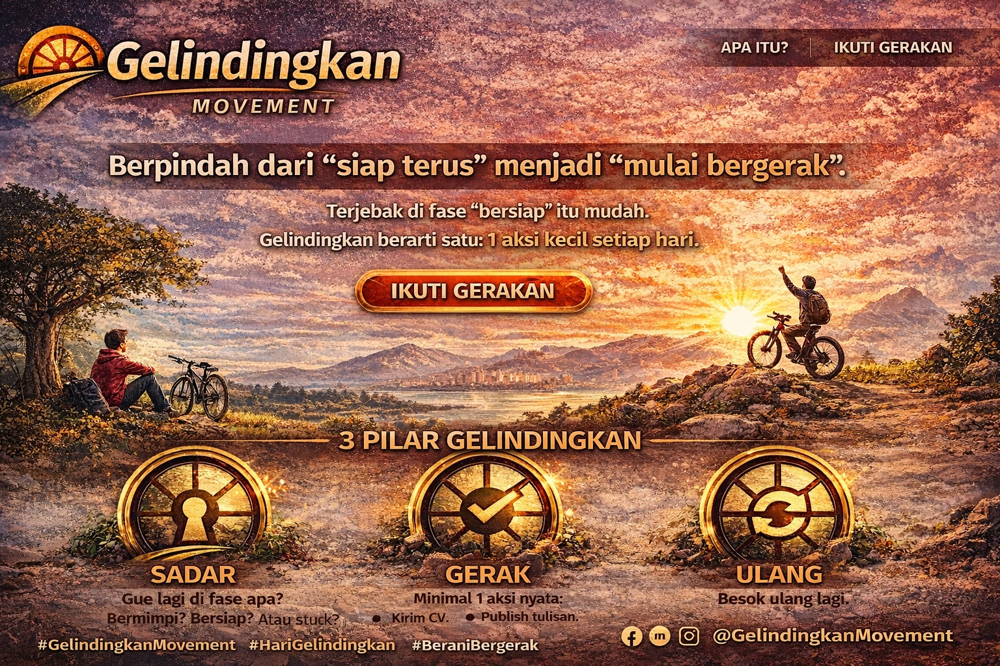

Perubahan tidak datang dari rencana sempurna. Tapi dari langkah pertama.
Terjebak di fase “bersiap” itu mudah. Tapi hidup berubah saat kita mulai bergerak.
1 aksi kecil hari ini. Itu saja.

Bermimpi → melihat kemungkinan
Bersiap → membangun fondasi
Bertindak → mulai bergerak
Berhasil → hasil dari konsistensi
Hidup bukan soal menemukan jalan yang sudah jadi. Tapi tentang berani mengayuh sampai jalan itu terbentuk.
AI akan mengambil alih banyak pekerjaan.
Tapi manusia justru dipaksa naik level.
Bukan lagi tentang kerja keras, tapi arah, keputusan, dan kesadaran.
Ini bukan sekadar belajar AI. Ini tentang tetap menjadi manusia di era AI.
Kalau kamu ingin benar-benar siap di era AI, saya sudah rangkum dalam ebook praktis.
🚀 Akses di Trakteer